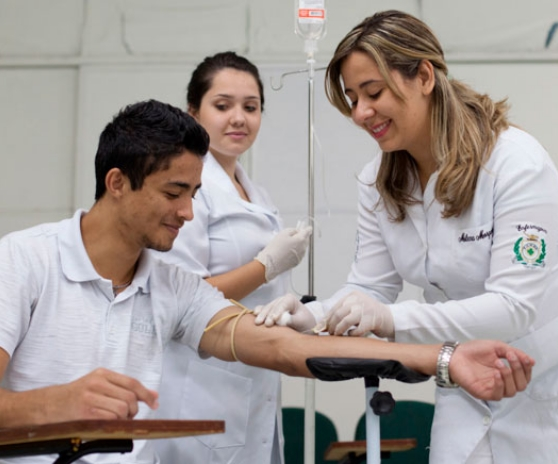

Enfermagem na Faculdade Luciano Feijão (FLF): Cuidado, Ciência e Protagonismo
Visão Geral: O curso de Enfermagem da Faculdade Luciano Feijão (FLF) é referência na formação de enfermeiros líderes e humanizados. Com foco na integralidade do cuidado, nosso projeto pedagógico combina fundamentos teóricos sólidos com uma vivência prática intensiva, preparando o estudante para atuar com autonomia, segurança e ética em todos os níveis de atenção à saúde.
Diferenciais Pedagógicos e Infraestrutura
- Formação Multidisciplinar: Currículo que integra conhecimentos biológicos, sociais e tecnológicos, focando na complexidade do cuidado humano.
- Laboratórios de Simulação: Ambientes equipados com manequins de alta fidelidade e tecnologia hospitalar para o treino de técnicas de enfermagem antes da prática clínica.
- Vivência no SUS: Inserção precoce na rede pública de saúde, permitindo que o aluno acompanhe de perto as demandas reais da população e a gestão do cuidado.
- Foco em Gestão e Pesquisa: Incentivo à autonomia profissional, preparando o enfermeiro tanto para a assistência direta quanto para a coordenação de equipes e gestão de serviços de saúde.
- Corpo Docente Especializado: Professores com vasta experiência na assistência e na docência, garantindo uma formação alinhada às exigências do mercado atual.
Perfil do Egresso
O enfermeiro formado pela FLF é um profissional com olhar crítico, capacidade resolutiva e forte compromisso ético. Nosso egresso é habilitado para gerenciar o cuidado em unidades hospitalares, atenção primária e urgência/emergência, sendo um elo fundamental na equipe multiprofissional, sempre pautado pelo atendimento humanizado e pela segurança do paciente.
O que você vai estudar (Eixos Temáticos)
- Ciências da Saúde: Anatomia, Fisiologia e Patologia aplicadas ao cuidado.
- Fundamentos de Enfermagem: Técnicas de assistência, semiologia e segurança do paciente.
- Saúde Coletiva: Políticas públicas, atenção primária e gestão em saúde.
- Enfermagem Especializada: Cuidado em urgência e emergência, saúde materno-infantil e terapia intensiva.
- Estágio Supervisionado: Vivência prática em cenários reais de saúde com supervisão direta.
